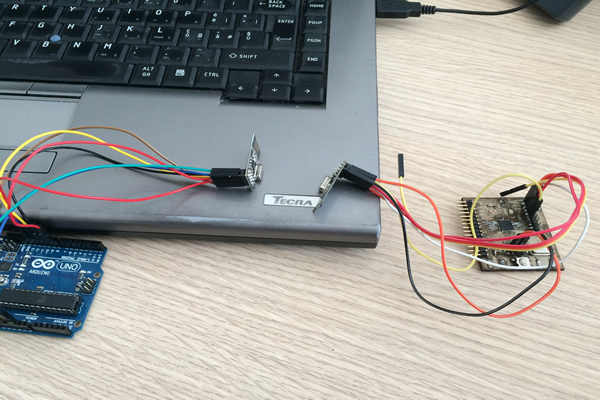

During this week we've learned about how to design and build a wired and wireless network connecting electronic devices with processors.
In fact, the assignment of this week is to design and build a wired and/or wireless network connecting at least two processors.
My work:
Step 1: Selecting Electronic components and programming tools:
For this assignment, I decided to think about simple communication between one board that I have assembled in the past modules and an arduino board.
I decided to use the Wireless Transmitter Receiver nRF24L01+ 2.4GHz in order to establish wireless communication between two processors.

Step 2: Programing for wireless communication
I had to make two programs, one for the transmitter device and one for the receiver device:
- The transmitter device ping the receiver device
- The receiver device ping back and display delay
- The user can change devices from transmitter to receiver each time he wants
Once I finished coding, and after several try&errors, I got the following error free code that I loaded on both devices
Transmitter
PROJECT=steadyled
#include
#include
#include
#include
/*
This sketch sends a string to a corresponding Arduino
with nrf24 attached. It appends a specific value
(2 in this case) to the end to signify the end of the
message.
*/
int msg[1];
RF24 radio(9,10);
const uint64_t pipe = 0xE8E8F0F0E1LL;
void setup(void){
Serial.begin(9600);
radio.begin();
radio.openWritingPipe(pipe);}
void loop(void){
String theMessage = "Hi, I'm Youssef Bouali";
Serial.print("Transmitter just sent the following message:");
Serial.println(theMessage);
int messageSize = theMessage.length();
for (int i = 0; i < messageSize; i++) {
int charToSend[1];
charToSend[0] = theMessage.charAt(i);
radio.write(charToSend,1);
}
//send the 'terminate string' value...
msg[0] = 2;
radio.write(msg,1);
/*delay sending for a short period of time. radio.powerDown()/radio.powerupp
//with a delay in between have worked well for this purpose(just using delay seems to
//interrupt the transmission start). However, this method could still be improved
as I still get the first character 'cut-off' sometimes. I have a 'checksum' function
on the receiver to verify the message was successfully sent.
*/
radio.powerDown();
delay(1000);
radio.powerUp();
}
Receiver
PROJECT=steadyled
#include
#include
#include
#include
/*
This sketch receives strings from sending unit via nrf24
and prints them out via serial. The sketch waits until
it receives a specific value (2 in this case), then it
prints the complete message and clears the message buffer.
*/
int msg[1];
RF24 radio(9,10);
const uint64_t pipe = 0xE8E8F0F0E1LL;
int lastmsg = 1;
String theMessage = " ";
void setup(void){
Serial.begin(9600);
radio.begin();
radio.openReadingPipe(1,pipe);
radio.startListening();
}
void loop(void){
if (radio.available()){
bool done = false;
done = radio.read(msg, 1);
char theChar = msg[0];
if (msg[0] != 2){
theMessage.concat(theChar);
}
else {
Serial.print("Receiver just received the following message:");
Serial.println(theMessage);
theMessage= "";
}
}
}
}
Step 3: Execution of wireless communication
Here is the video of the wireless network working between the two devices:
The following is a short video of changing values as the sensor senses moisture:
Download Zone
The sketch files are available for downloand here: